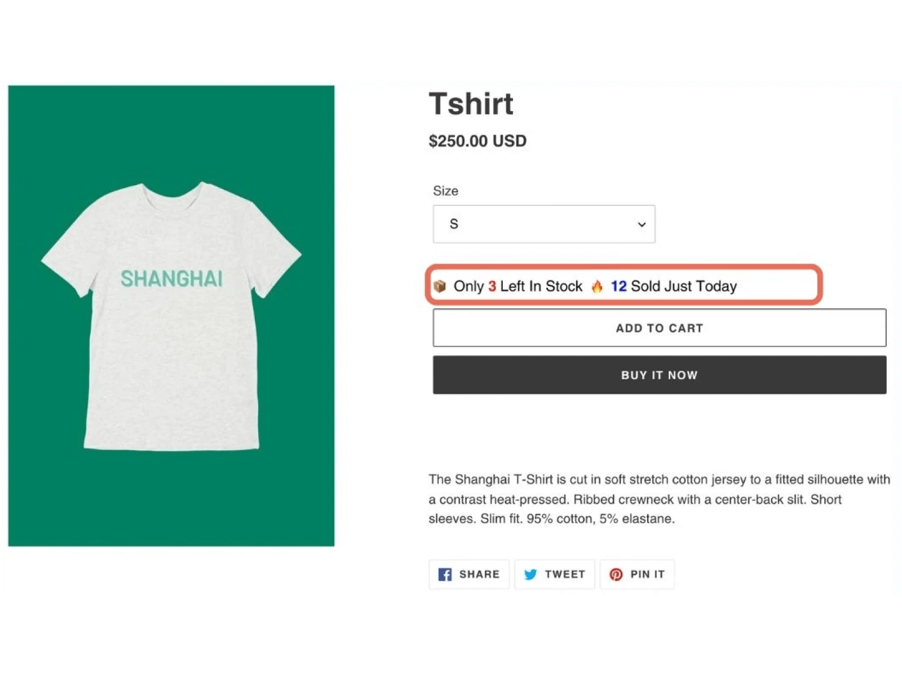
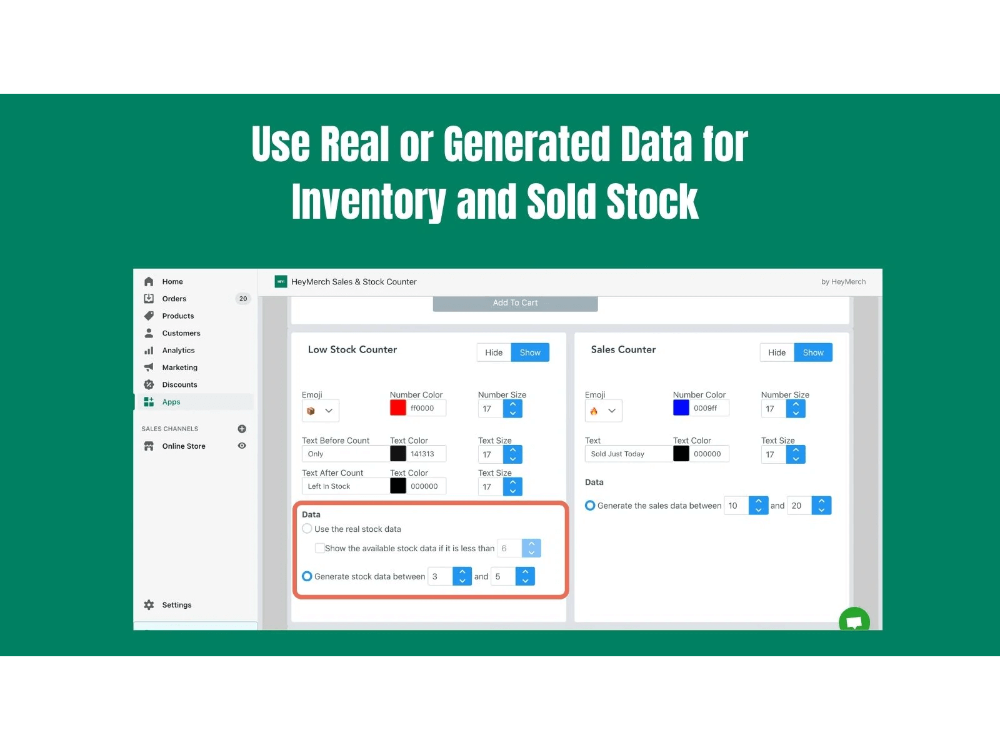

Fake scarcity works by creating an artificial sense of limited availability around a product or service, pushing users to act quickly out of fear of missing out. This is achieved by displaying misleading messages about low stock levels or high demand. By tapping into the scarcity cognitive bias, this deceptive pattern preys on users' natural tendency to assign more value to items that appear rare or exclusive, pushing them into making hasty purchasing decisions without fully evaluating their options.
The Shopify app “Sales & Stock Counter” is made by a company called HeyMerch. It makes it easy for store owners to show fake low stock messages, as shown in the first image (see red outlined area). In the promotional materials, they provide a guide outlining how to do this (see second image). The store owner can select options that cause it to display fake low stock counters and fake sales numbers.
 